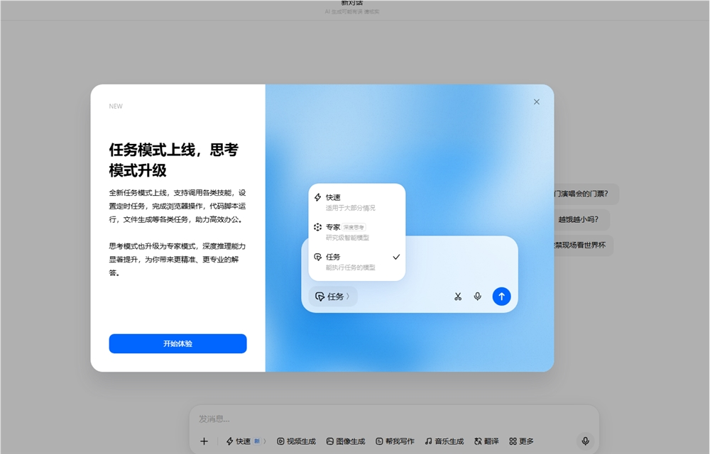
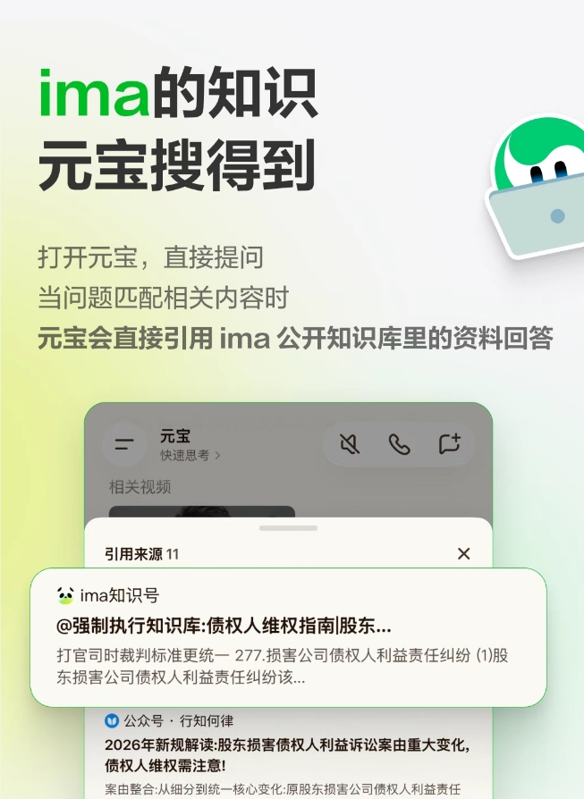

AI Daily: Doubao Rolls Out Task Mode; Yuanbao Connects to ima Public Knowledge Base; Zhipu Releases GLM-5.2 Under MIT License
Welcome to 'AI Daily' — your daily briefing on the artificial intelligence landscape. Each edition curates the sector's top stories, tailored for developers.
Explore new AI products at: https://app.aibase.com/zh
1. Doubao Introduces 'Task Mode' — Multi-Round Search and PPT Automation Now Supported
Doubao's 'Task Mode' launch signals its transition from a text-only interface to an AI Agent equipped for complex workflow orchestration, with multi-round search and automated PPT generation among its capabilities.

📌 🤖 Doubao debuts 'Task Mode,' enabling multi-round search and autonomous PPT creation. 🔄 A strategic shift from single-purpose interface to workflow-capable AI Agent.
2. Yuanbao Integrates with ima Public Knowledge Repository
Yuanbao has been formally linked to the ima public knowledge repository, enabling users to search and cite its contents directly within the platform.

📌 🔗 Yuanbao is now integrated with ima's public knowledge repository. 📚 Users gain direct search-and-citation access to its contents.
3. Zhipu Releases GLM-5.2 in Full
Zhipu AI has released the GLM-5.2 model in its entirety under the MIT license, permitting royalty-free commercial use by developers.
📌 🔓 Zhipu GLM-5.2 is now available in full under the MIT license. 💻 Developers are granted royalty-free commercial usage rights.
4. WeChat Open Platform Publishes AI Ecosystem Access Guidelines
WeChat Open Platform has published its AI ecosystem integration guidelines, enabling mini-programs to be called directly through WeChat AI.
📌 📱 WeChat Open Platform publishes AI ecosystem access guidelines. 🔌 Mini-programs are now callable directly via WeChat AI.
5. Moonshot AI Secures Additional $2 Billion in Funding
Moonshot AI has closed an additional $2 billion financing round, earmarked to accelerate Kimi's product development and market penetration.
📌 💰 Moonshot AI secures $2 billion in new funding. 📈 Capital injection to fuel Kimi's product roadmap.
6. ChatGPT Deploys Emergency Lockdown Mode
ChatGPT has been equipped with an emergency lockdown mode, designed to strengthen user privacy safeguards and security controls.
📌 🔒 ChatGPT deploys emergency lockdown mode. 🛡️ Strengthened privacy and security controls for users.
7. Meituan Debuts AI Browser 'Tabbit 1.0'
Meituan has officially launched Tabbit 1.0, an AI-powered browser designed to deliver a smarter browsing experience.
8. Alibaba's Qwen Unveils End-to-End College Application Advisory Agent
Alibaba's Qwen has launched a college application advisory Agent, designed to provide end-to-end consultation services for the Gaokao admissions process.